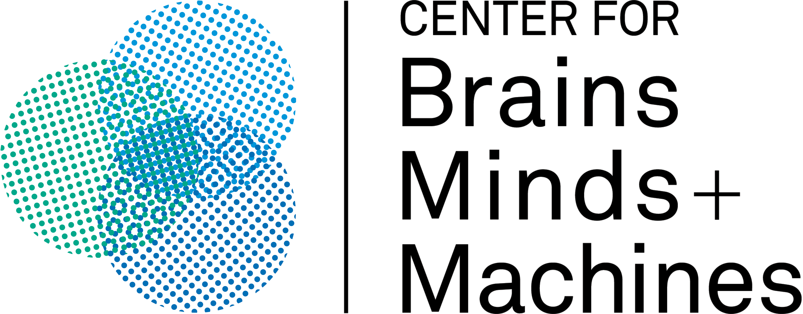
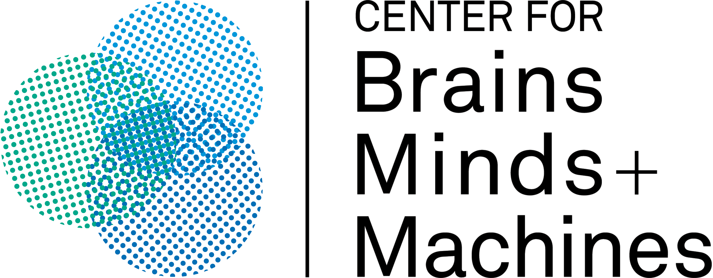

Computationally Recreating Vision Evolution
Science Advances
The peer-reviewed publication detailing the full experimental setup, results, and evolutionary analysis.
Science Advances, 2025
We evolve eyes and behaviors of artificial embodied agents inside video-game-like physics engines to replay millions of years of evolution.
Computationally recreating vision evolution
Evolution happened once. We build a video-game universe to replay evolution. This allows us to computationally study principles behind biological intelligence and create new forms of artificial intelligence.
Agents begin with a single light-sensing cell and evolve their visual intelligence by facing real physics, embodied constraints, and survival pressures.
The point is to let visual intelligence, the ability to sense (hardware), percieve, reason, and act (software) in an environment, emerge as opposed to being engineered by fixed datasets and human biases.

What if Darwin had an evolution engine?
Each experiment is a hypothesis that we test in our What-If Machine. We pose a what-if question or counterfactual, evolve embodied agents inside video-game-like physics engines, and watch which eyes and behaviors emerge.
Detection of food from poison pressures agents to evolve towards high-acuity, forward-facing camera-like eyes.
What if the goals of vision were different?
We start with one light-sensing cell and evolve visuo-motor control in a world with only one task: Detection or Obstacle Avoidance.
Navigation/orientation pressures agents to evolve distributed, compound/eyelet-like vision (wide coverage)

What if brains stayed small throughout evolution?
When we systematically scale eyes and brain size at the same time, we uncover power-law scaling between neural capacity and task performance — but only when visual acuity scales too. If acuity is bottlenecked, scaling the “brain” alone stops buying better behavior.
What if eyes could bend light?
When we enable optical genes, evolution repeatedly discovers lens-like optics because they solve a brutal constraint:

Explore the peer-reviewed Science Advances paper, roadmap research, talks, open-source tools, and public exhibits that bring evolving intelligence to life.
The peer-reviewed publication detailing the full experimental setup, results, and evolutionary analysis.

Why should we generate and not hand design visual intelligence? We discuss why it's important, the applications of doing so, and how to get there.

We propose a new way to codesign imaging systems and task-specific perception models based on feedback from the environment.

We show that learning to attend in visual scenes leads to foveal image sampling, a key visual system feature.

We design neural network architectures using reinforcement learning to improve performance on visual tasks.
We are working on a lot of exciting things that we will be releasing soon! We are always looking for collaborators and partners to work with in expanding our work to new domains. Feel free to reach out to us to join our team!.

Highlights from a talk at UC Berkeley's Redwood Center.
Run the evolutionary simulator, define new tasks, and evolve your own embodied agents.
Interactive notebooks for experimenting with Cambrian agents directly in the browser.

How can we interact with evolution? Our exhibitions let visitors experience evolving vision in a hands-on way.
 



A collaboration supported by the MIT GenAI Impacts of Generative AI Grant.